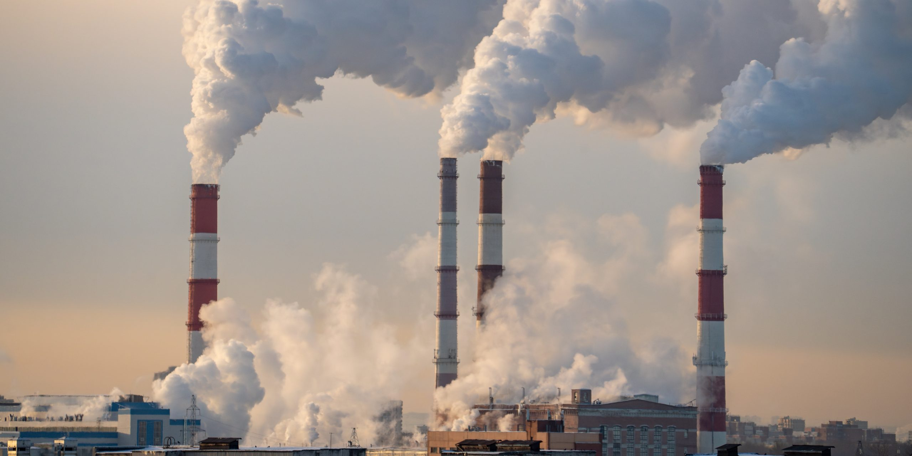
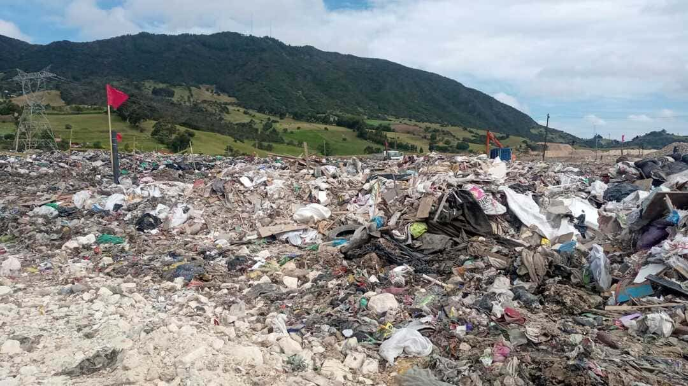

La contaminación ambiental en Colombia representa una crisis de salud pública que causa aproximadamente 17.500 muertes anuales, según el Instituto Nacional de Salud (INS). Este impacto se distribuye principalmente entre la mala calidad del aire (15.681 muertes) y la mala calidad del agua (1.868 muertes), afectando gravemente a poblaciones vulnerables y generando costos económicos estimados en billones de pesos.
El aire contaminado es el principal factor de riesgo, con 80% de las emisiones provenientes de automotores y el resto de industrias y residencias. Ciudades como Bogotá, Medellín, Cali y Bello superan frecuentemente los límites de la Organización Mundial de la Salud (OMS) en partículas PM2.5, lo que provoca enfermedades respiratorias, cardiovasculares y muertes prematuras. Aunque hay esfuerzos de electrificación del transporte, ninguna estación de monitoreo alcanzó los estándares recomendados en 2023

La contaminación del agua en Colombia es un problema crítico, con el 70% de los cuerpos de agua superficiales y subterráneos afectados por vertimientos industriales, agrícolas y domésticos. La falta de tratamiento adecuado de aguas residuales y la deforestación contribuyen a la degradación de los ecosistemas acuáticos, afectando la biodiversidad y la salud humana.
Ciudades como Bogotá, Medellín, Cali y Bello presentan niveles de material particulado (PM2.5) superiores a los estándares de la Organización Mundial de la Salud (OMS). Aunque hubo una leve reducción en el promedio nacional a 13,8 µg/m³ en 2024, ninguna ciudad cumple con las guías internacionales, exacerbado por inversiones térmicas y alta densidad vehicular.
Bogotá genera más de 11 millones de toneladas de gases de efecto invernadero. Los residuos sólidos en la ciudad son responsables de la emisión del 18% (2.090.622) el tercero después del transporte, además de contaminar los cuerpos de agua tanto en la superficie como en los niveles subterráneos por el líquido tóxico generado por la basura.

Además, Considerando que Bogotá está construida sobre humedales, el impacto ambiental debería ser de mayor preocupación. Sin embargo, los residuos se ven por todos lados, la ciudad enfrenta una mala gestión de residuos, se acumulan 7.500 toneladas de residuos, de los cuales solo el 17% se recicla.